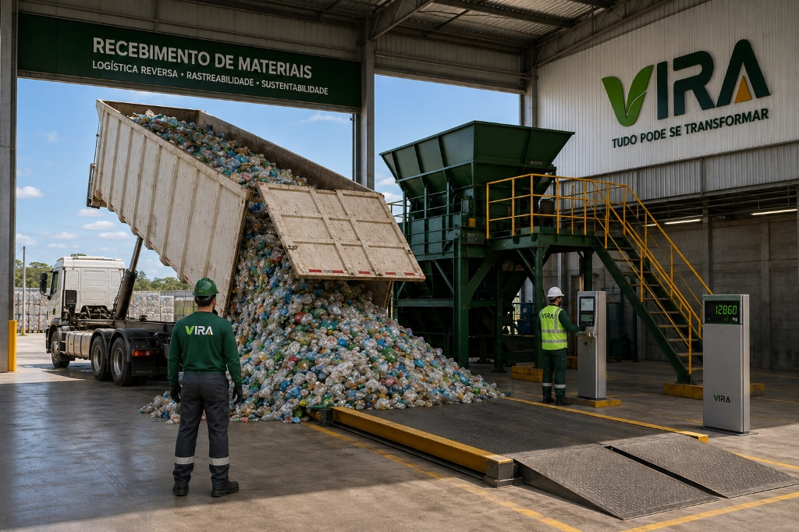
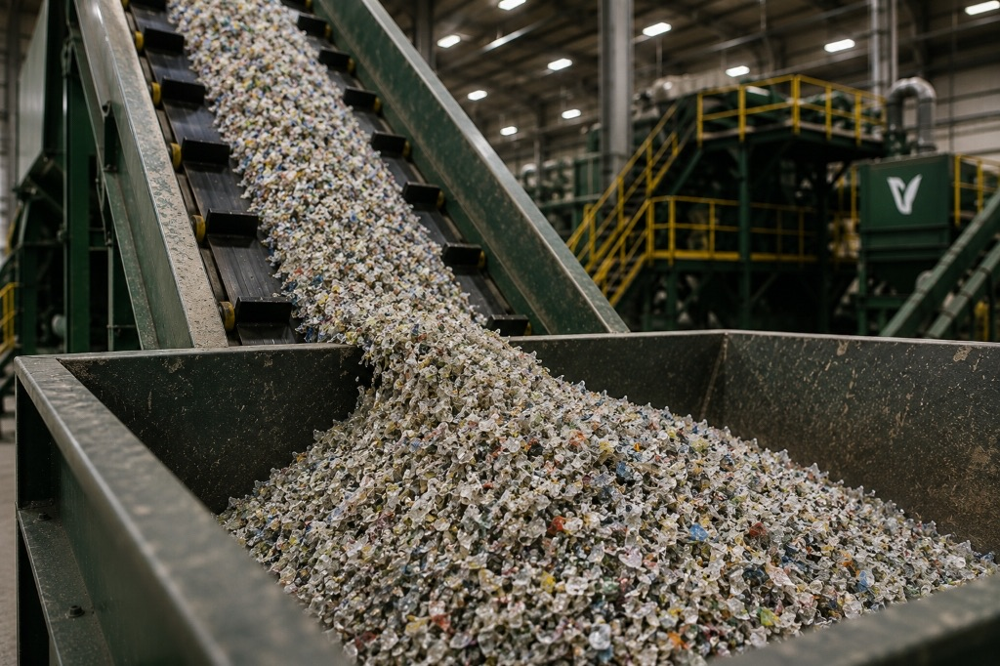
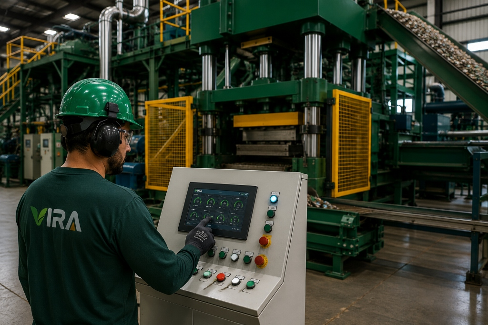
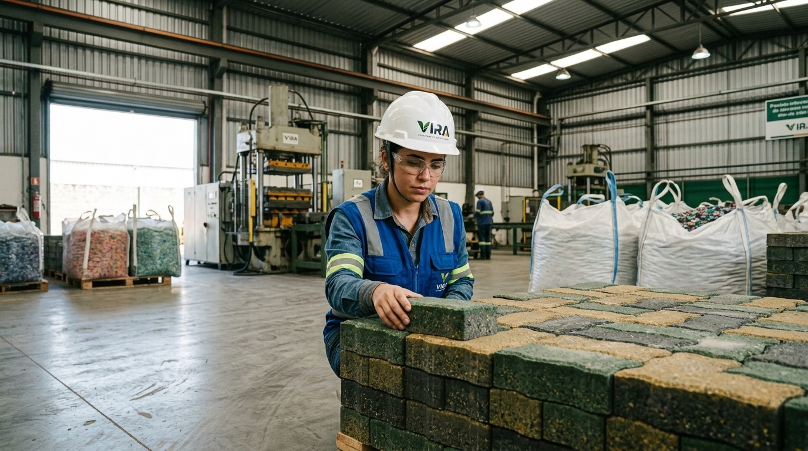
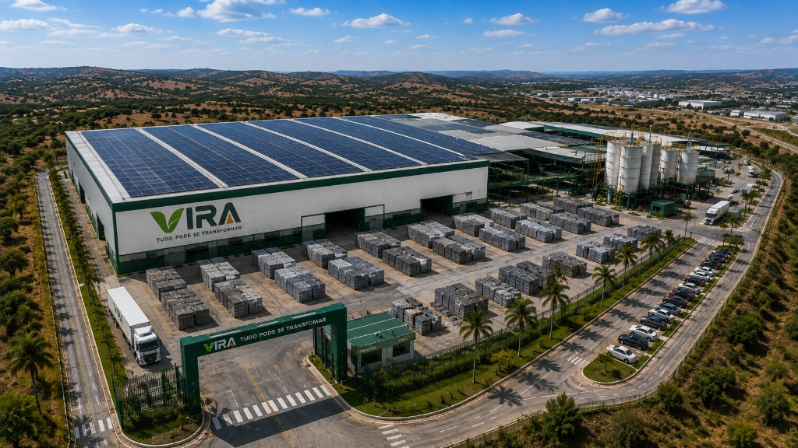

01 — RecebimentoResíduos pós-consumo chegam à fábrica com origem identificada.

Transformamos polímeros pós-consumo em soluções de alto desempenho para arquitetura, infraestrutura e cidades.
Conheça a coleçãoConheça a coleção


+1.200 t/mêsCapacidade industrial em Caruaru — PE
Sobre a VIRA
A VIRA é uma indústria de materiais circulares que transforma resíduos plásticos em componentes de alto desempenho. Unimos engenharia polimérica, produção industrial e rastreabilidade para criar materiais duráveis, especificáveis e capazes de permanecer em circulação.
Da coleta à arquitetura
Cada etapa converte o que seria descarte em desempenho, permanência e valor para o território.

01 — RecebimentoResíduos pós-consumo chegam à fábrica com origem identificada.
 02 — Renda e dignidade
02 — Renda e dignidadeA cadeia começa com pessoas, cooperativas e trabalho valorizado.

03 — PreparaçãoTriagem, descontaminação e micronização elevam a pureza técnica.

04 — TransformaçãoCalor, pressão e controle dimensional dão nova forma à matéria.

05 — QualidadeEnsaios e rastreabilidade acompanham cada lote produzido.

06 — Nova vidaO material retorna à cidade como arquitetura e infraestrutura.
Capacidade mensal
+1.200tPolímeros reciclados transformados em escala industrial.Matriz energética
100%Energia gerada por usinas solares instaladas na fábrica.Petróleo virgem
0%Matéria regenerada, sem resina virgem na formulação.Garantia
10 anosDurabilidade pensada para aplicações permanentes.Materiais disponíveis
Cinza concreto · encaixe holandês
Acabamento polido · 100% reciclado
Vigamento para decks e pergolados
Flakes micronizados de alta fluidez
Expertise industrial
Engenharia térmica que converte polímeros pós-consumo em peças maciças, estáveis e resistentes.
Preparação e descontaminação da matéria-prima para atingir homogeneidade e pureza técnica.
Rastreabilidade por QR Code com origem, composição, lote e impacto ambiental de cada peça.
Calculadora de impacto
Uma estimativa inicial para apoiar decisões de projeto. A equipe técnica valida os resultados na especificação.
Impacto e cooperativas
Nossa matéria carrega histórias de coleta, renda e transformação. Ao conectar cooperativas, indústria e projeto, mantemos valor circulando no território.
Da fábrica ao projeto
Processo, pessoas e controle industrial formam a base de cada material VIRA.


Perguntas frequentes
Pavimentação, fachadas, mobiliário, decks, pergolados, cercamentos e soluções desenvolvidas sob demanda.
Sim. A documentação aplicável, os resultados de ensaios e a rastreabilidade são apresentados durante a especificação.
Sim. Arquitetos, construtoras, incorporadoras e prefeituras podem solicitar amostras por meio do formulário.
Projetos especiais são avaliados conforme geometria, volume, aplicação e requisitos de desempenho.
O QR Code vincula a peça ao lote de produção e aos dados disponíveis sobre composição, origem e impacto.
Contato e especificação
Conte sobre a aplicação, a metragem e o estágio do projeto. Nossa equipe técnica retorna com caminhos de especificação.